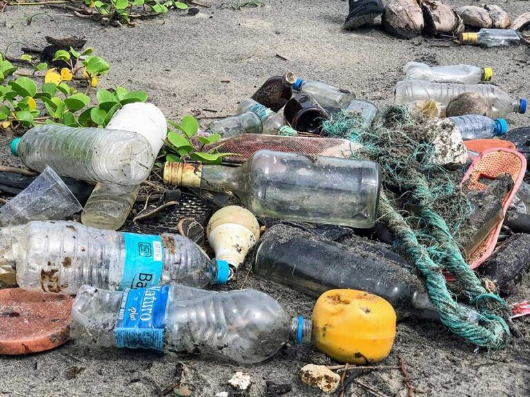
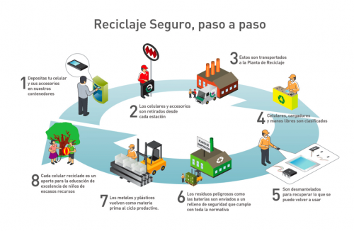
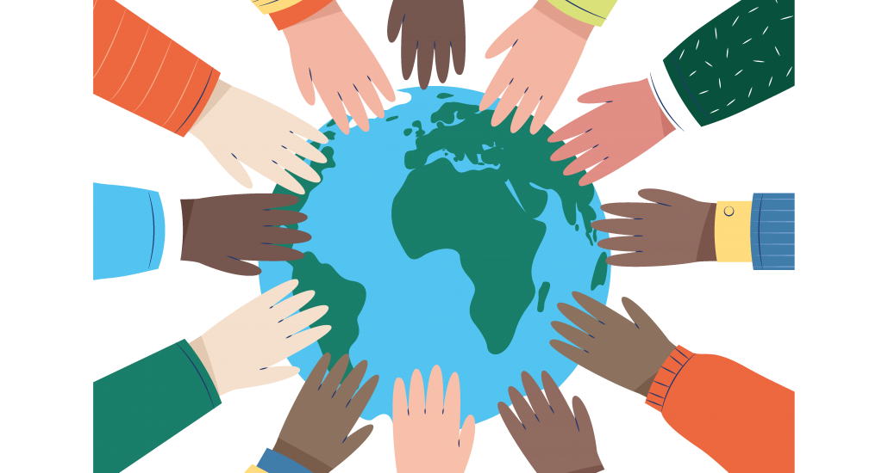
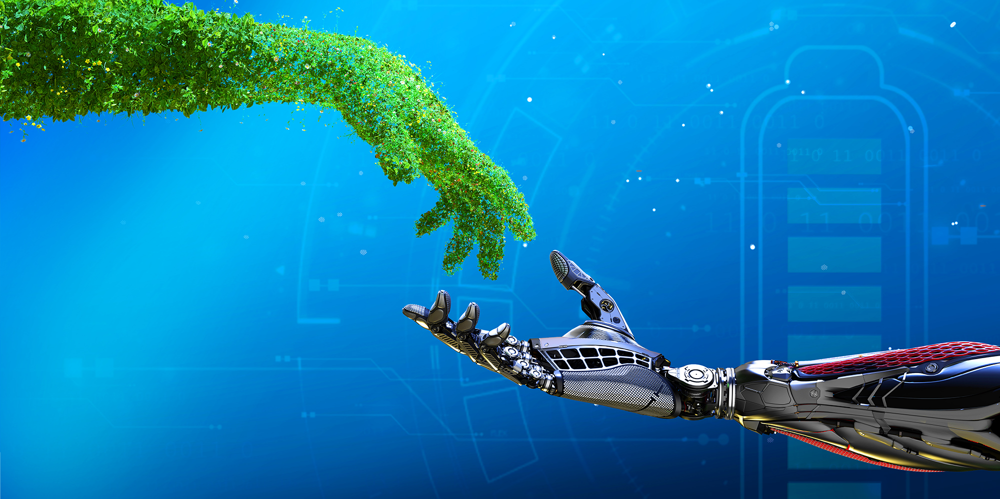
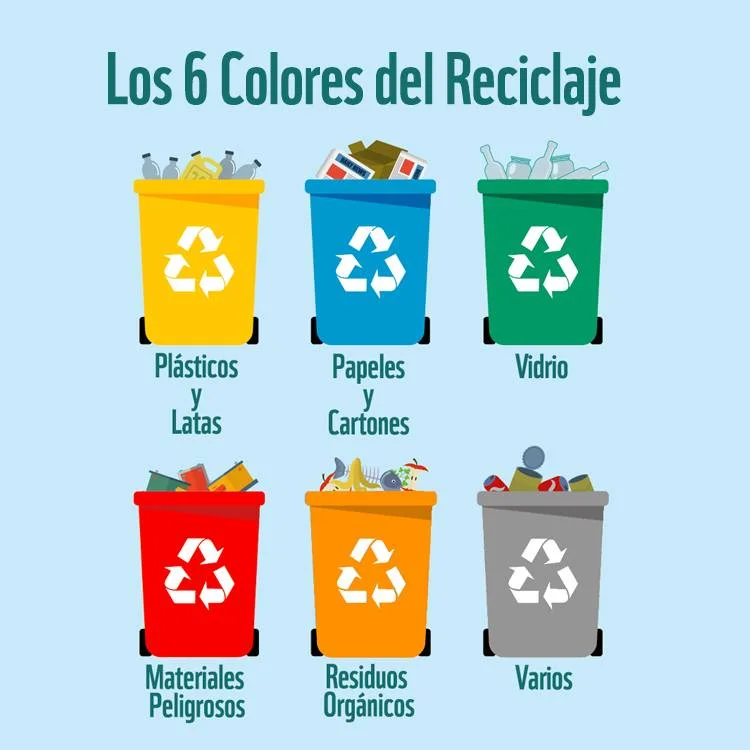
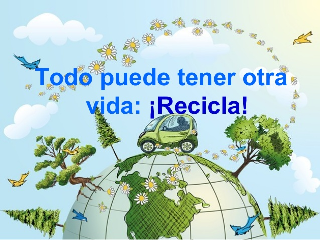
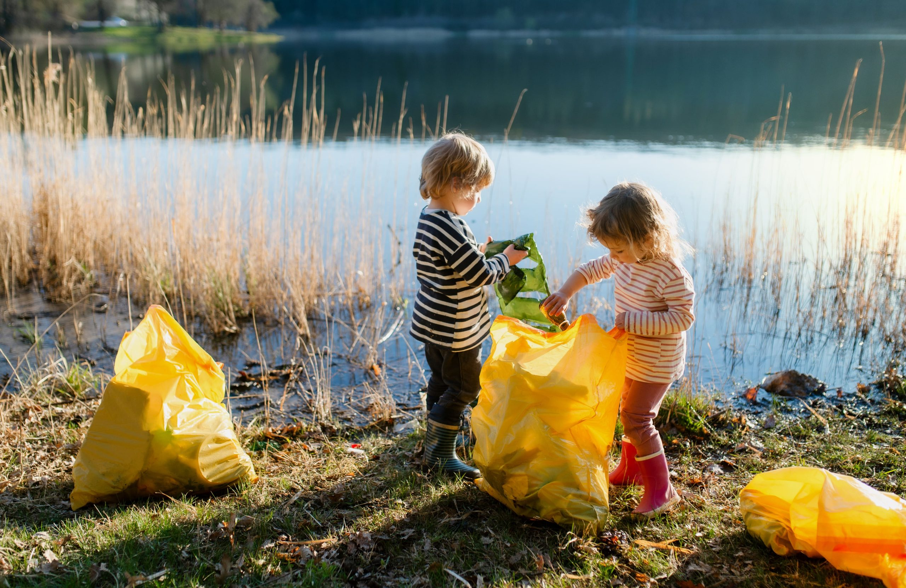

📈
La Contaminación del Medio Ambiente: Un Desafío
Global! 🚀
La contaminación del medio ambiente es uno de los problemas más graves que
enfrentamos hoy en día. Este fenómeno afecta el aire que respiramos, el agua que bebemos y
los suelos que cultivamos. La emisión de gases contaminantes de industrias, vehículos y
actividades humanas, así como la acumulación de desechos tóxicos, contribuyen a la
degradación de nuestros ecosistemas.

No Contaminemos!
📰
La Importancia de Reciclar: Responsabilidad de Todos 💫.

El reciclaje es una práctica fundamental para la conservación del
medio ambiente. Consiste en recolectar, clasificar y procesar materiales desechados para
convertirlos en nuevos productos. Esta actividad no solo reduce la cantidad de residuos que
llegan a los vertederos, sino que también disminuye la necesidad de extraer y procesar
materias primas, lo que ayuda a conservar los recursos naturales y reduce la contaminación.
Adoptar hábitos de reciclaje en nuestra vida diaria es crucial para proteger nuestro planeta
para las futuras generaciones.
Recicla y
cuida!
🏘️
Responsabilidad Social: Un Compromiso Colectivo ✨

La responsabilidad social es un principio fundamental que impulsa a las
organizaciones y a los individuos a contribuir al bienestar de la sociedad. Este compromiso
implica tomar decisiones y llevar a cabo acciones que promuevan el desarrollo sostenible, el
respeto por los derechos humanos y la mejora de las condiciones de vida en las comunidades.
No
se trata solo de cumplir con las obligaciones legales, sino de ir más allá para hacer una
diferencia positiva. Adoptar prácticas responsables y éticas, apoyar iniciativas
comunitarias y
fomentar un entorno de inclusión y equidad son pasos cruciales para construir un futuro más
justo y equitativo para todos.
Responsabilidad de todos
🔋
Buenas Prácticas de Reciclaje! 🌺
Las buenas prácticas de reciclaje son esenciales para reducir el impacto ambiental, conservar
recursos naturales y promover una economía circular.

Reciclar de manera efectiva comienza con la correcta separación de los materiales reciclables.
Asegúrate de clasificar los residuos en diferentes contenedores según el tipo de material: papel
y
cartón, plásticos, vidrio y metales. Enjuaga los envases para eliminar restos de alimentos o
líquidos, ya que esto previene la contaminación de otros materiales reciclables. Además, evita
mezclar materiales reciclables con desechos no reciclables, ya que esto puede dificultar el
proceso
de reciclaje y reducir la calidad del material recuperado.
Buenas Prácicas
📚
Educación Ambiental y Reciclaje!👨👩👧👦
Fomentar la educación ambiental es esencial para crear conciencia sobre la importancia de
proteger nuestro entorno natural. Esta educación nos enseña sobre los ecosistemas, la
biodiversidad y las amenazas que enfrentan los recursos naturales.

A través de programas
educativos y actividades, podemos comprender mejor cómo nuestras acciones impactan al
medio ambiente y cómo podemos tomar decisiones más sostenibles.
La educación infantil no se limita a la enseñanza académica, sino que abarca el desarrollo emocional,
social y ético de los pequeños. Es crucial que los adultos proporcionen un entorno de aprendizaje
seguro, estimulante y enriquecedor. Esto implica no solo transmitir conocimientos básicos, sino
también enseñar habilidades sociales, fomentar la curiosidad y promover valores como el respeto, la
empatía y la responsabilidad.
Educación
📱
La Tecnología en el Medio Ambiente y Reciclaje!🚀
La tecnología ha transformado significativamente el enfoque hacia la protección del medio
ambiente y el reciclaje. En el ámbito del reciclaje, la automatización y los sistemas avanzados de
clasificación de residuos permiten procesar materiales de manera más eficiente, separando
plásticos, metales y papeles con alta precisión. Los sensores y tecnologías de visión por
computadora
están mejorando la calidad de los materiales reciclados, mientras que las aplicaciones móviles
facilitan a los ciudadanos la correcta separación de residuos y proporcionan información sobre
puntos de
reciclaje cercanos. Además, la tecnología de monitoreo ambiental, como los sensores de
calidad del aire y agua, ayuda a detectar y responder rápidamente a la contaminación, permitiendo
una
gestión más efectiva de los recursos naturales. Estas innovaciones tecnológicas no solo optimizan
los procesos de reciclaje, sino que también promueven un enfoque más consciente y proactivo
hacia la sostenibilidad y la conservación del medio ambiente.

Tecnología y medio ambiente
🗑️
Cómo podemos depositar residuos🫶

Reciclar es un proceso esencial para proteger el medio ambiente y conservar recursos naturales. Para
hacerlo correctamente, primero separa los materiales reciclables, como papel, cartón, plásticos,
vidrio
y metales, asegurándote de que estén limpios y secos. Deposita estos materiales en los contenedores
adecuados, siguiendo las normas locales de reciclaje. Los residuos orgánicos, como restos de comida
y
cáscaras de frutas, deben ir en una compostera o contenedor específico. Los residuos no reciclables,
como ciertos plásticos y productos contaminados, deben colocarse en la caneca de residuos generales.
Reciclar de manera adecuada reduce la contaminación, ahorra energía y ayuda a construir un futuro
más
sostenible.
Deposita tus residuos
🌍
Día mudial del Reciclaje! 🎉
Celebración cada 18 de marzo! 🌿🌐🎉
El Día Mundial del Reciclaje, celebrado cada 18 de marzo, es una fecha clave para
sensibilizar y educar a la comunidad sobre la importancia del reciclaje y su impacto en la
protección del medio ambiente.

Este día se dedica a promover prácticas de reciclaje
efectivas y a resaltar cómo cada individuo puede contribuir a reducir la cantidad de residuos y a
conservar recursos naturales. A través de eventos educativos, talleres y campañas de concienciación,
se busca motivar a las personas a adoptar hábitos sostenibles, a separar correctamente los residuos
y
a participar activamente en los programas de reciclaje locales. El reciclaje no solo ayuda a
reducir la contaminación y la presión sobre los vertederos, sino que también fomenta una economía
circular al recuperar materiales valiosos y reducir la necesidad de nuevos recursos.
Celebración
🌱
Una demostración de Amor: Un Legado!💚❤️

Mostrar amor por el planeta es fundamental para asegurar un futuro
saludable y sostenible para las generaciones venideras. Cada pequeña acción cuenta, desde reducir
nuestro consumo de recursos hasta apoyar iniciativas de conservación. Podemos empezar por
adoptar hábitos eco-amigables como reducir, reutilizar y reciclar, así como promover el uso de
energías
renovables.Cuidar nuestro entorno también implica valorar la biodiversidad y proteger los hábitats
naturales. Al hacer elecciones conscientes y educar a otros sobre la importancia de proteger
nuestro planeta, contribuimos a preservar la belleza y la vitalidad de la Tierra para todos los
seres
vivos.
Ama tú planeta
 leer más Sobre Medio Ambiente
leer más Sobre Medio Ambiente